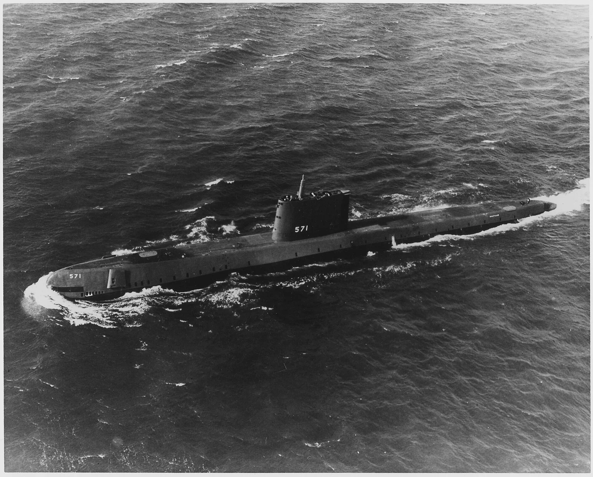
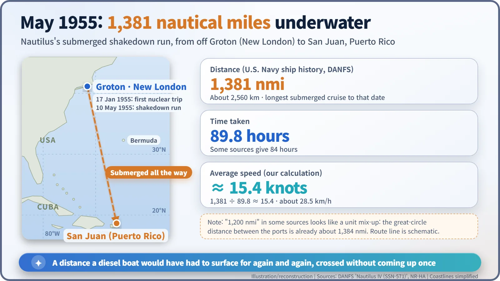
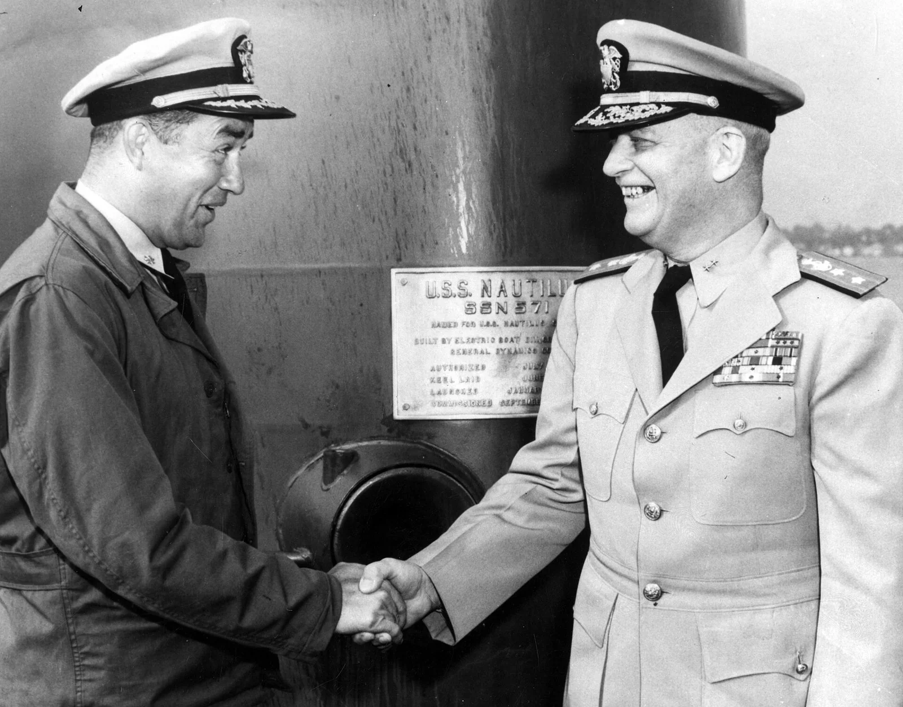
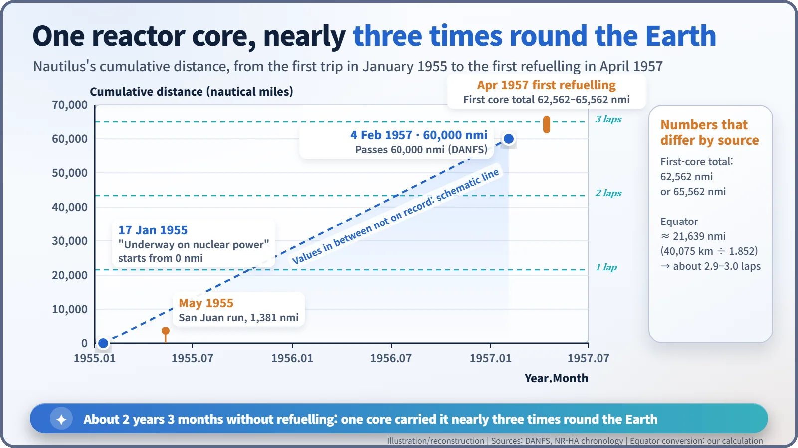

Nuclear History · 155
Four Words Instead of Two Pages — USS Nautilus Signals "Underway on Nuclear Power" (17 January 1955)
A four-word lamp signal from Groton announced a submarine that no longer had to surface to breathe.
At 11:00 a.m. on 17 January 1955, USS Nautilus cast off in Groton, Connecticut, and a signal lamp flashed four words: "Underway on nuclear power." Four months later she ran submerged all the way to Puerto Rico, and within two years a single reactor core had carried her nearly three times around the Earth.
Four words instead of two pages
What if the captain had read the speech? According to a story often told, his staff had drafted a two-page message for the first voyage of the world's first nuclear-powered submarine. It was a historic day, so why not mark it properly? The captain set the draft aside. Instead, a signal lamp flashed one short sentence across the water: "Underway on nuclear power." Four words.
The story of the unused two pages was told in 2016 by the then Chief of Naval Operations, Admiral John Richardson, at an event in Groton, Connecticut. What the draft actually said has never been published, so treat that part as a story often told. The signal itself is the same in every Navy and museum record. [5] [3]
A ship that had to hold its breath
Why did four words make such news? Look at what a submarine was in the 1940s. On the surface it ran on diesel engines; underwater it ran only on electricity stored in batteries, because a diesel engine needs air. Batteries ran down quickly, so sooner or later the boat had to come up near the surface, breathe in air and recharge. It was less an underwater ship than a ship that could dive for a while.
A reactor breaks that limit. Nuclear fission is not burning, so it needs no oxygen. Use the reactor's heat to raise steam and spin a turbine, and a submarine can run fast and long underwater without any air supply at all.

Eleven o'clock on the Thames River
USS Nautilus (SSN-571) had already been commissioned on 30 September 1954. But for almost four more months she stayed at her pier in Groton, Connecticut, while work and testing went on. Then, at 11:00 a.m. on 17 January 1955, the mooring lines came off. [1] [3]
Her captain was Commander Eugene P. "Dennis" Wilkinson (1918–2013), a former chemistry teacher who had made eight war patrols in Pacific submarines during the Second World War and had later trained in nuclear physics at Oak Ridge National Laboratory in Tennessee. As the boat moved away from the pier, a signalman flashed those four words by lamp. According to an account citing the Atomic Energy Commission's official history, the message went to the escort tug Skylark. There was no fanfare in the wording, just a plain status report of the kind any ship might send, except that no ship had ever been able to send this one before. [4] [6]
You will sometimes read that 17 January was the day Nautilus was commissioned. It was not. It was the day she first went to sea on nuclear power.
To Puerto Rico without coming up once
The real test came in spring. On 10 May 1955, Nautilus headed south for her shakedown cruise and stayed submerged all the way to San Juan, Puerto Rico. The U.S. Navy's ship history (DANFS) records the run as 1,381 miles in 89.8 hours, the longest submerged cruise by a submarine up to that time. [1]

The numbers vary from source to source: some say 84 hours, others 1,200 nautical miles. A quick check helps. The shortest sea distance between the two ports is already about 1,384 nautical miles (about 2,560 km), so the 1,381 must be nautical miles, not land miles. That gives an average speed of about 15.4 knots, roughly 28 km/h. That is slower than city traffic, but holding that pace underwater for more than three and a half days was unthinkable for a battery boat. [2]
For the second phase of the shakedown, Rear Admiral Arleigh A. Burke (1901–1996), soon to become Chief of Naval Operations, came aboard himself. In the photograph the two men shake hands in front of the builder's plaque on the sail, both grinning; it is easy to see how much the Navy was expecting from this boat.

New rules for hide-and-seek at sea
From 1955 to 1957, Nautilus tested what fast, long submerged running meant in practice. Anti-submarine warfare at the time rested on one assumption: a submarine must eventually come up to breathe. Aircraft and radar were used to catch boats at or near the surface. Against a ship that never surfaced and could quickly leave the area, that assumption collapsed, and the Navy's ship history says the older anti-submarine methods became largely ineffective. [1]
And the fuel? On 4 February 1957 Nautilus passed 60,000 nautical miles, and her first refuelling came that April. Her first core is recorded as having carried her 62,562 nautical miles in some sources and 65,562 in others. Either way, divided by the length of the equator (about 21,639 nautical miles), that is nearly three trips around the Earth on one load of fuel. [1] [2]

What four words left behind
Nautilus went on to write another chapter under the Arctic ice. Wilkinson stayed with nuclear power: after the 1979 accident at Three Mile Island, he became the first president of the Institute of Nuclear Power Operations (INPO), serving from 1980 to 1984. The operating discipline learned at sea crossed over to power plants on land. [4]
The four words were later carved into the U.S. Navy Memorial in Washington, D.C. Would a two-page speech have been remembered as long? The day a ship that had to hold its breath became a ship that never needed to breathe was captured best by one plain sentence.